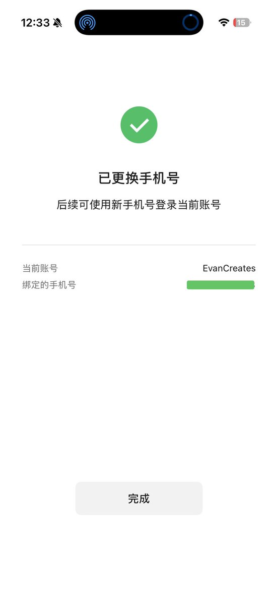
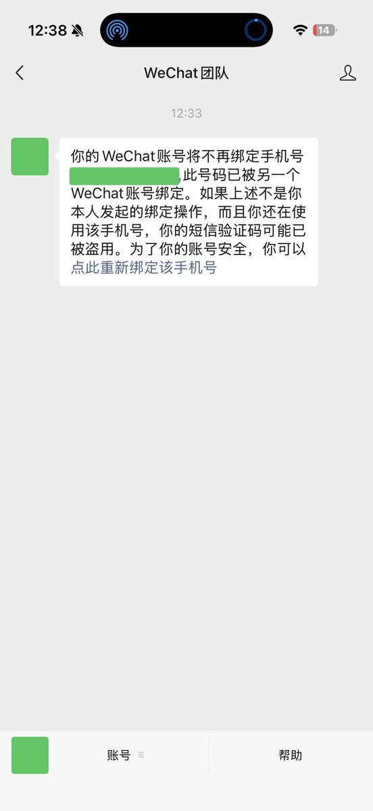

@EvanWritesX 切勿频繁国区、外区切换。
微信到WeChat后，一旦登录root设备就封，申诉得找海外微信团队
WeChat回到微信，就不会那么容易死了，但数据送中

微信到WeChat后，一旦登录root设备就封，申诉得找海外微信团队
WeChat回到微信，就不会那么容易死了，但数据送中


【勘误 & 新发现】Club Sim 到底能不能换绑微信？
之前吐槽 Club Sim 无法绑定老微信号，今天实测发现我错怪它了。
实测复盘：
1.起初：尝试将用了10多年的 +86 老号换绑 Club Sim，失败。
2.上周：用这张 Club Sim 成功注册了一个新微信号。
3.今天：再次尝试将老号换绑该 Club Sim，竟然成功了！ https://t.co/TMcEUIMsix https://t.co/mV5eMW9kA8
之前吐槽 Club Sim 无法绑定老微信号，今天实测发现我错怪它了。
实测复盘：
1.起初：尝试将用了10多年的 +86 老号换绑 Club Sim，失败。
2.上周：用这张 Club Sim 成功注册了一个新微信号。
3.今天：再次尝试将老号换绑该 Club Sim，竟然成功了！ https://t.co/TMcEUIMsix https://t.co/mV5eMW9kA8